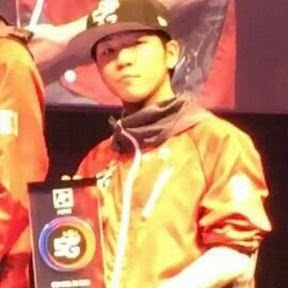

Famous Players
We will introduce 2 famous players. Both of them are very productive when streaming and explaining how the games should go and what their stradegies are. By the way, they both only speaks Japanese. What? It's not my fault for having you only know English.
Amemiya Taiyou 雨宮 あめみや 太陽 たいよう
Amemiya Taiyou (雨宮あめみや 太陽たいよう) is a character in Inazuma Eleven GO, and also a forward and the captain of Arakumo Gakuen. He joins Raimon as a midfielder in the Inazuma Eleven GO Chrono Stone series. Later, he became a midfielder of Chrono Storm. Someone chose this character as his id. Now he is the world champion of modern Tetris. 
Video Tutorials
130k Subscription Memorial! Play with viewers.
Can I guard my champion?
Hosimati Suisei 星街すいせい
Maybe Amemiya Taiyou is too hard core a player for you. Then you can check out a more beginner friendly youtuber. She is a streamer with a live2d animation avator. Besides playing Tetris, she also streams for chating and singing.
I want to get champion position in the VIP room!
When a comet cut the night.
Do you enjoy your journey so far? Why not check out our community page?